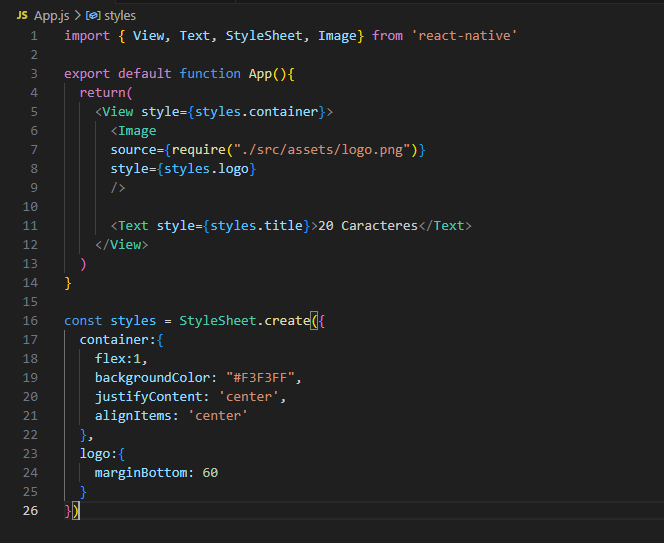

O pensamento computacional é uma estratégia que permite resolver problemas,de forma eficiente, criando soluções genéricas para problemas variados, pertencentes a uma mesma classe.
Como habilidade humana, o pensamento computacional deveria ser desenvolvido desde a infância, assim como as demais disciplinas, não precisando,necessariamente, estar associado ao ensino da programação de computadores.
